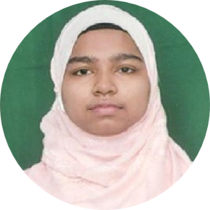

|  |
S Sana AhmedPersonal Data:
Date of Birth: 16-06-2003
|
| Qualification | Year of Passing | Subjects | Board Or University | Marks(%) |
|---|---|---|---|---|
| 10th | 2018 | -- | APSEB | 10.0 GPA |
| 12th | 2020 | Science | Board Of Intermediate | 8.65 CGPA |
| Graduation | In Progress | CSE-DS | JNTUA | 9.14 CGPA |